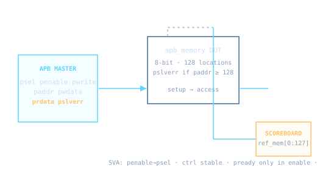

An APB (Advanced Peripheral Bus) memory design plus a student-level verification environment combining three industry-style techniques: directed tests, assertions (protocol checking), and constrained random generation with self-checking.
load reads image_i.hex via $readmemh; fetch dumps via $writememhpsel && penable && pwrite; read when psel && penable && !pwritepslverr asserted for invalid addresses (paddr ≥ 128)apb_write() / apb_read() implement 2-phase setup → access transferspenable_implies_psel, ctrl_stable_in_access, pready_only_when_enableref_mem[0:127] scoreboard